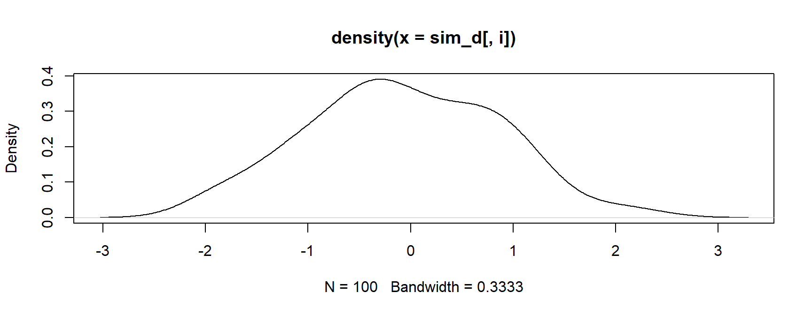
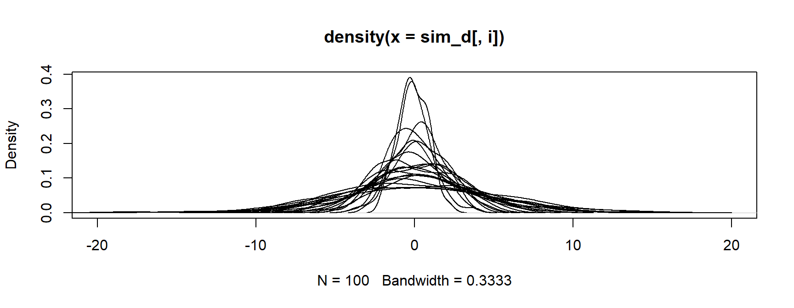

Week 2: Intro to Base R Iterations
& Lab 1
University of Oregon
Spring 2026
Base R Iterations &
Lab 1
Week 2
Agenda
- For loops
- Apply family of loops
lapply()sapply()vapply()apply()(briefly)
- Lab 1 (🤞)
Learning objectives
- Understand the basics of what it means to loop through a vector
- Begin to recognize use cases
- Be able to apply basic
forloops and write their equivalents withlapply
for loops

Basic overview for loops
[1] "a" "b" "c" "d" "e" "f" "g" "h" "i" "j" "k" "l" "m" "n" "o" "p" "q" "r" "s"
[20] "t" "u" "v" "w" "x" "y" "z"Note these are five different character scalars (atomic vectors of length one)
It is NOT a single vector
Creating indexes
You will commonly see code like this:
Instead, use seq_along() or seq_len()
seq_*
seq_along()- takes a vector argument
- creates an index from 1 to the length of the vector provided
seq_len()- takes a single positive integer argument
- creates an index from 1 to that integer
Why are these preferable?
Avoids the length of 0 problem
: works with both increasing and decreasing sequences, which is problematic
Avoids the length of 0 problem
Another example
Try this
logical(0)Basically, the loop is just not executed
Another for loop example
Simulate tossing a coin, record results
- For a single toss
- For multiple tosses, first allocate a vector with
lengthequal to the number of iterations (here,10)
- Next, run the trial \(n\) times, storing the result in your pre-allocated vector
Wait, what?
Growing vectors
- ALWAYS pre-allocate a vector for storage before running a
forloop - Contrary to some opinions you may see out there,
forloops are not actually slower thanlapply, etc., provided theforloop is written well - This primarily means not growing a vector
Growing vector example
100,000 (1e5) coin flips by growing a vector
Pre-allocated vector example
Exactly the same thing with pre-allocated vector
Result
The result is the same, regardless of the approach (notice I forced the random number generator to start at the same place in both samples)
[1] TRUEBut speed is obviously NOT identical
You try
Base R comes with letters and LETTERS
- Make an alphabet of upper/lower case
- For example, create “Aa” with
paste0(LETTERS[1], letters[1])
- For example, create “Aa” with
- Write a
forloop for all letters
Don’t look ahead!

Answer
Where is it?
Another example
- Say we wanted to simulate 100 cases from a random normal (
rnorm()) distribution, where we varied the standard deviation in increments of 0.2, ranging from 1 to 5- Maybe this is a relatable example; if not, that’s okay - focus on the process
- First, specify a vector of standard deviations
[1] 1.0 1.2 1.4 1.6 1.8 2.0 2.2 2.4 2.6 2.8 3.0 3.2 3.4 3.6 3.8 4.0 4.2 4.4 4.6
[20] 4.8 5.0Look at our vector
Write a for loop
note use of [[ above
Now look at our vector
List of 21
$ : num [1:100] 0.113 -1.034 1.039 0.75 -0.762 ...
$ : num [1:100] -0.478 0.899 -1.879 -0.562 1.329 ...
$ : num [1:100] -1.6934 -1.3552 -2.413 -0.5348 0.0318 ...
$ : num [1:100] 1.084 -0.822 -1.952 1.2 0.265 ...
$ : num [1:100] 0.64 -0.04 -0.715 -0.309 0.494 ...
$ : num [1:100] -3.98 -2.165 0.488 -2.217 -2.08 ...
$ : num [1:100] -1.691 -0.576 -0.239 3.253 0.777 ...
$ : num [1:100] 2.975 0.673 2.041 -2.141 1.652 ...
$ : num [1:100] -1.447 -2.445 -4.24 0.148 -0.355 ...
$ : num [1:100] 4.71 -3.84 -3.27 5.42 1.67 ...
$ : num [1:100] 0.115 -2.412 -1 -2.307 -0.332 ...
$ : num [1:100] 0.727 1.451 -0.163 1.078 -5.881 ...
$ : num [1:100] 0.79 -4.756 -0.829 -2.805 -2.242 ...
$ : num [1:100] 1.883 0.458 1.318 5.461 2.404 ...
$ : num [1:100] 3.53 1.14 -10.58 7.69 -6.24 ...
$ : num [1:100] -5.903 3.891 2.005 -0.756 -6.651 ...
$ : num [1:100] -1.875 3.626 -0.837 -4.227 0.305 ...
$ : num [1:100] 6.78 -6.19 -12.4 -1.79 -3.45 ...
$ : num [1:100] 6.04 -1.47 -1.9 5.37 3.16 ...
$ : num [1:100] 3.976 6.997 1.454 0.294 1.205 ...
$ : num [1:100] 4.02 1.46 -1.78 8.73 -8.37 ...List/data frame
Remember, if all the vectors of our list are the same length, it can be transformed into a data frame
- First, let’s provide meaningful names
List of 21
$ sd_1 : num [1:100] 0.113 -1.034 1.039 0.75 -0.762 ...
$ sd_1.2: num [1:100] -0.478 0.899 -1.879 -0.562 1.329 ...
$ sd_1.4: num [1:100] -1.6934 -1.3552 -2.413 -0.5348 0.0318 ...
$ sd_1.6: num [1:100] 1.084 -0.822 -1.952 1.2 0.265 ...
$ sd_1.8: num [1:100] 0.64 -0.04 -0.715 -0.309 0.494 ...
$ sd_2 : num [1:100] -3.98 -2.165 0.488 -2.217 -2.08 ...
$ sd_2.2: num [1:100] -1.691 -0.576 -0.239 3.253 0.777 ...
$ sd_2.4: num [1:100] 2.975 0.673 2.041 -2.141 1.652 ...
$ sd_2.6: num [1:100] -1.447 -2.445 -4.24 0.148 -0.355 ...
$ sd_2.8: num [1:100] 4.71 -3.84 -3.27 5.42 1.67 ...
$ sd_3 : num [1:100] 0.115 -2.412 -1 -2.307 -0.332 ...
$ sd_3.2: num [1:100] 0.727 1.451 -0.163 1.078 -5.881 ...
$ sd_3.4: num [1:100] 0.79 -4.756 -0.829 -2.805 -2.242 ...
$ sd_3.6: num [1:100] 1.883 0.458 1.318 5.461 2.404 ...
$ sd_3.8: num [1:100] 3.53 1.14 -10.58 7.69 -6.24 ...
$ sd_4 : num [1:100] -5.903 3.891 2.005 -0.756 -6.651 ...
$ sd_4.2: num [1:100] -1.875 3.626 -0.837 -4.227 0.305 ...
$ sd_4.4: num [1:100] 6.78 -6.19 -12.4 -1.79 -3.45 ...
$ sd_4.6: num [1:100] 6.04 -1.47 -1.9 5.37 3.16 ...
$ sd_4.8: num [1:100] 3.976 6.997 1.454 0.294 1.205 ...
$ sd_5 : num [1:100] 4.02 1.46 -1.78 8.73 -8.37 ...Convert to df
sd_1 sd_1.2 sd_1.4 sd_1.6 sd_1.8 sd_2
1 0.1126720 -0.4780102 -1.69336367 1.0835239 0.63974813 -3.9799125
2 -1.0338082 0.8988913 -1.35515384 -0.8223365 -0.04004912 -2.1648949
3 1.0389273 -1.8787826 -2.41295461 -1.9515378 -0.71508282 0.4876032
4 0.7495827 -0.5617623 -0.53478814 1.2003186 -0.30924976 -2.2166700
5 -0.7615774 1.3292711 0.03180703 0.2648453 0.49367973 -2.0800577
6 -0.5946631 -0.6382888 -1.27049744 -1.4362464 -0.04664557 -2.0178328
sd_2.2 sd_2.4 sd_2.6 sd_2.8 sd_3 sd_3.2 sd_3.4
1 -1.6907542 2.9746229 -1.4465928 4.7115532 0.1150782 0.7274318 0.7898735
2 -0.5756973 0.6732238 -2.4450853 -3.8355788 -2.4115488 1.4514710 -4.7561379
3 -0.2391966 2.0410256 -4.2399557 -3.2689751 -1.0003639 -0.1629507 -0.8290433
4 3.2530927 -2.1406894 0.1479403 5.4152456 -2.3066529 1.0777145 -2.8049169
5 0.7772467 1.6516594 -0.3545570 1.6692248 -0.3319414 -5.8806571 -2.2415574
6 -3.4338520 0.9435318 2.6994436 -0.5823008 -5.8046079 2.1054521 -0.5912333
sd_3.6 sd_3.8 sd_4 sd_4.2 sd_4.4 sd_4.6 sd_4.8
1 1.8833575 3.534135 -5.9032251 -1.8753397 6.776103 6.044064 3.9760694
2 0.4578044 1.142994 3.8908180 3.6259659 -6.185148 -1.468651 6.9974463
3 1.3184129 -10.583007 2.0050042 -0.8370599 -12.399146 -1.903332 1.4542270
4 5.4612558 7.688458 -0.7558747 -4.2270062 -1.789687 5.365211 0.2943318
5 2.4039176 -6.237536 -6.6505067 0.3048719 -3.449543 3.164006 1.2048734
6 -2.2619557 -4.076220 -0.0935083 -2.4253962 -3.334022 -3.646544 7.5757365
sd_5
1 4.0211372
2 1.4649359
3 -1.7770657
4 8.7269522
5 -8.3688811
6 -0.8422565Base R Method
- Calculate all the densities
List of 21
$ :List of 8
..$ x : num [1:512] -3.03 -3.02 -3.01 -2.99 -2.98 ...
..$ y : num [1:512] 0.000297 0.000334 0.000374 0.000418 0.000468 ...
..$ bw : num 0.333
..$ n : int 100
..$ old.coords: logi FALSE
..$ call : language density.default(x = sim_d[, i])
..$ data.name : chr "sim_d[, i]"
..$ has.na : logi FALSE
..- attr(*, "class")= chr "density"
$ :List of 8
..$ x : num [1:512] -4.2 -4.18 -4.16 -4.15 -4.13 ...
..$ y : num [1:512] 0.000128 0.000149 0.000172 0.000198 0.00023 ...
..$ bw : num 0.356
..$ n : int 100
..$ old.coords: logi FALSE
..$ call : language density.default(x = sim_d[, i])
..$ data.name : chr "sim_d[, i]"
..$ has.na : logi FALSE
..- attr(*, "class")= chr "density"
$ :List of 8
..$ x : num [1:512] -5.25 -5.23 -5.21 -5.19 -5.17 ...
..$ y : num [1:512] 9.57e-05 1.07e-04 1.21e-04 1.36e-04 1.52e-04 ...
..$ bw : num 0.52
..$ n : int 100
..$ old.coords: logi FALSE
..$ call : language density.default(x = sim_d[, i])
..$ data.name : chr "sim_d[, i]"
..$ has.na : logi FALSE
..- attr(*, "class")= chr "density"
$ :List of 8
..$ x : num [1:512] -5.36 -5.34 -5.31 -5.29 -5.27 ...
..$ y : num [1:512] 8.42e-05 9.43e-05 1.06e-04 1.19e-04 1.33e-04 ...
..$ bw : num 0.53
..$ n : int 100
..$ old.coords: logi FALSE
..$ call : language density.default(x = sim_d[, i])
..$ data.name : chr "sim_d[, i]"
..$ has.na : logi FALSE
..- attr(*, "class")= chr "density"
$ :List of 8
..$ x : num [1:512] -6.6 -6.58 -6.55 -6.53 -6.5 ...
..$ y : num [1:512] 7.01e-05 7.85e-05 8.82e-05 9.88e-05 1.10e-04 ...
..$ bw : num 0.677
..$ n : int 100
..$ old.coords: logi FALSE
..$ call : language density.default(x = sim_d[, i])
..$ data.name : chr "sim_d[, i]"
..$ has.na : logi FALSE
..- attr(*, "class")= chr "density"
$ :List of 8
..$ x : num [1:512] -6.55 -6.53 -6.5 -6.48 -6.45 ...
..$ y : num [1:512] 0.000108 0.00012 0.000133 0.000148 0.000164 ...
..$ bw : num 0.72
..$ n : int 100
..$ old.coords: logi FALSE
..$ call : language density.default(x = sim_d[, i])
..$ data.name : chr "sim_d[, i]"
..$ has.na : logi FALSE
..- attr(*, "class")= chr "density"
$ :List of 8
..$ x : num [1:512] -8.27 -8.24 -8.21 -8.18 -8.15 ...
..$ y : num [1:512] 7.19e-05 8.15e-05 9.26e-05 1.05e-04 1.19e-04 ...
..$ bw : num 0.695
..$ n : int 100
..$ old.coords: logi FALSE
..$ call : language density.default(x = sim_d[, i])
..$ data.name : chr "sim_d[, i]"
..$ has.na : logi FALSE
..- attr(*, "class")= chr "density"
$ :List of 8
..$ x : num [1:512] -7.65 -7.62 -7.58 -7.55 -7.52 ...
..$ y : num [1:512] 6.68e-05 7.49e-05 8.37e-05 9.37e-05 1.05e-04 ...
..$ bw : num 0.836
..$ n : int 100
..$ old.coords: logi FALSE
..$ call : language density.default(x = sim_d[, i])
..$ data.name : chr "sim_d[, i]"
..$ has.na : logi FALSE
..- attr(*, "class")= chr "density"
$ :List of 8
..$ x : num [1:512] -9.31 -9.27 -9.24 -9.2 -9.16 ...
..$ y : num [1:512] 4.74e-05 5.31e-05 5.95e-05 6.65e-05 7.42e-05 ...
..$ bw : num 0.949
..$ n : int 100
..$ old.coords: logi FALSE
..$ call : language density.default(x = sim_d[, i])
..$ data.name : chr "sim_d[, i]"
..$ has.na : logi FALSE
..- attr(*, "class")= chr "density"
$ :List of 8
..$ x : num [1:512] -10.07 -10.03 -9.99 -9.95 -9.91 ...
..$ y : num [1:512] 4.45e-05 5.04e-05 5.69e-05 6.43e-05 7.25e-05 ...
..$ bw : num 1
..$ n : int 100
..$ old.coords: logi FALSE
..$ call : language density.default(x = sim_d[, i])
..$ data.name : chr "sim_d[, i]"
..$ has.na : logi FALSE
..- attr(*, "class")= chr "density"
$ :List of 8
..$ x : num [1:512] -10.7 -10.6 -10.6 -10.6 -10.5 ...
..$ y : num [1:512] 8.97e-05 1.00e-04 1.12e-04 1.25e-04 1.40e-04 ...
..$ bw : num 0.952
..$ n : int 100
..$ old.coords: logi FALSE
..$ call : language density.default(x = sim_d[, i])
..$ data.name : chr "sim_d[, i]"
..$ has.na : logi FALSE
..- attr(*, "class")= chr "density"
$ :List of 8
..$ x : num [1:512] -11.1 -11 -11 -10.9 -10.9 ...
..$ y : num [1:512] 9.04e-05 1.02e-04 1.15e-04 1.29e-04 1.45e-04 ...
..$ bw : num 1.12
..$ n : int 100
..$ old.coords: logi FALSE
..$ call : language density.default(x = sim_d[, i])
..$ data.name : chr "sim_d[, i]"
..$ has.na : logi FALSE
..- attr(*, "class")= chr "density"
$ :List of 8
..$ x : num [1:512] -9.81 -9.77 -9.73 -9.69 -9.64 ...
..$ y : num [1:512] 5.09e-05 5.76e-05 6.51e-05 7.36e-05 8.29e-05 ...
..$ bw : num 1.02
..$ n : int 100
..$ old.coords: logi FALSE
..$ call : language density.default(x = sim_d[, i])
..$ data.name : chr "sim_d[, i]"
..$ has.na : logi FALSE
..- attr(*, "class")= chr "density"
$ :List of 8
..$ x : num [1:512] -11.6 -11.5 -11.4 -11.4 -11.3 ...
..$ y : num [1:512] 6.75e-05 7.63e-05 8.59e-05 9.64e-05 1.08e-04 ...
..$ bw : num 1.28
..$ n : int 100
..$ old.coords: logi FALSE
..$ call : language density.default(x = sim_d[, i])
..$ data.name : chr "sim_d[, i]"
..$ has.na : logi FALSE
..- attr(*, "class")= chr "density"
$ :List of 8
..$ x : num [1:512] -14.2 -14.1 -14.1 -14 -14 ...
..$ y : num [1:512] 3.89e-05 4.46e-05 5.10e-05 5.82e-05 6.61e-05 ...
..$ bw : num 1.2
..$ n : int 100
..$ old.coords: logi FALSE
..$ call : language density.default(x = sim_d[, i])
..$ data.name : chr "sim_d[, i]"
..$ has.na : logi FALSE
..- attr(*, "class")= chr "density"
$ :List of 8
..$ x : num [1:512] -13.8 -13.7 -13.6 -13.6 -13.5 ...
..$ y : num [1:512] 3.70e-05 4.16e-05 4.66e-05 5.24e-05 5.88e-05 ...
..$ bw : num 1.43
..$ n : int 100
..$ old.coords: logi FALSE
..$ call : language density.default(x = sim_d[, i])
..$ data.name : chr "sim_d[, i]"
..$ has.na : logi FALSE
..- attr(*, "class")= chr "density"
$ :List of 8
..$ x : num [1:512] -13.1 -13 -12.9 -12.9 -12.8 ...
..$ y : num [1:512] 3.57e-05 4.06e-05 4.62e-05 5.25e-05 5.95e-05 ...
..$ bw : num 1.35
..$ n : int 100
..$ old.coords: logi FALSE
..$ call : language density.default(x = sim_d[, i])
..$ data.name : chr "sim_d[, i]"
..$ has.na : logi FALSE
..- attr(*, "class")= chr "density"
$ :List of 8
..$ x : num [1:512] -20.5 -20.5 -20.4 -20.3 -20.2 ...
..$ y : num [1:512] 2.40e-05 2.71e-05 3.05e-05 3.41e-05 3.84e-05 ...
..$ bw : num 1.87
..$ n : int 100
..$ old.coords: logi FALSE
..$ call : language density.default(x = sim_d[, i])
..$ data.name : chr "sim_d[, i]"
..$ has.na : logi FALSE
..- attr(*, "class")= chr "density"
$ :List of 8
..$ x : num [1:512] -14.8 -14.8 -14.7 -14.7 -14.6 ...
..$ y : num [1:512] 5.06e-05 5.70e-05 6.39e-05 7.14e-05 8.00e-05 ...
..$ bw : num 1.52
..$ n : int 100
..$ old.coords: logi FALSE
..$ call : language density.default(x = sim_d[, i])
..$ data.name : chr "sim_d[, i]"
..$ has.na : logi FALSE
..- attr(*, "class")= chr "density"
$ :List of 8
..$ x : num [1:512] -22.6 -22.6 -22.5 -22.4 -22.4 ...
..$ y : num [1:512] 2.80e-05 3.22e-05 3.70e-05 4.23e-05 4.82e-05 ...
..$ bw : num 1.59
..$ n : int 100
..$ old.coords: logi FALSE
..$ call : language density.default(x = sim_d[, i])
..$ data.name : chr "sim_d[, i]"
..$ has.na : logi FALSE
..- attr(*, "class")= chr "density"
$ :List of 8
..$ x : num [1:512] -20.2 -20.1 -20.1 -20 -19.9 ...
..$ y : num [1:512] 2.37e-05 2.68e-05 3.03e-05 3.42e-05 3.86e-05 ...
..$ bw : num 1.88
..$ n : int 100
..$ old.coords: logi FALSE
..$ call : language density.default(x = sim_d[, i])
..$ data.name : chr "sim_d[, i]"
..$ has.na : logi FALSE
..- attr(*, "class")= chr "density"Base R Method
- Next, plot the first density

Base R Method
- Finally, loop through all the other densities

Skipping iterations
On the prior slide, I set the index to skip over the first by using
seq(2, length(densities))Alternatively, the loop could have been written like this

Of course, someone has to write loops. It doesn’t have to be you.
– Jenny Bryan
tidyverse
One of the best things about the tidyverse is that it often does the looping for you
break
Stop an iteration if a condition is met with break
break on “ugli fruit”
[1] "apple" "apricot" "avocado"
[4] "banana" "bell pepper" "bilberry"
[7] "blackberry" "blackcurrant" "blood orange"
[10] "blueberry" "boysenberry" "breadfruit"
[13] "canary melon" "cantaloupe" "cherimoya"
[16] "cherry" "chili pepper" "clementine"
[19] "cloudberry" "coconut" "cranberry"
[22] "cucumber" "currant" "damson"
[25] "date" "dragonfruit" "durian"
[28] "eggplant" "elderberry" "feijoa"
[31] "fig" "goji berry" "gooseberry"
[34] "grape" "grapefruit" "guava"
[37] "honeydew" "huckleberry" "jackfruit"
[40] "jambul" "jujube" "kiwi fruit"
[43] "kumquat" "lemon" "lime"
[46] "loquat" "lychee" "mandarine"
[49] "mango" "mulberry" "nectarine"
[52] "nut" "olive" "orange"
[55] "pamelo" "papaya" "passionfruit"
[58] "peach" "pear" "persimmon"
[61] "physalis" "pineapple" "plum"
[64] "pomegranate" "pomelo" "purple mangosteen"
[67] "quince" "raisin" "rambutan"
[70] "raspberry" "redcurrant" "rock melon"
[73] "salal berry" "satsuma" "star fruit"
[76] "strawberry" "tamarillo" "tangerine"
[79] "ugli fruit" "watermelon" [1] "cherimoya" "lychee" "passionfruit" "blueberry" "cranberry"
[6] "currant" "boysenberry" "chili pepper" "avocado" "blood orange"
[11] "ugli fruit" "" "" "" ""
[16] "" "" "" "" ""
[21] "" "" "" "" ""
[26] "" "" "" "" ""
[31] "" "" "" "" ""
[36] "" "" "" "" ""
[41] "" "" "" "" ""
[46] "" "" "" "" ""
[51] "" "" "" "" ""
[56] "" "" "" "" ""
[61] "" "" "" "" ""
[66] "" "" "" "" ""
[71] "" "" "" "" ""
[76] "" "" "" "" ""
[81] "" "" "" "" ""
[86] "" "" "" "" ""
[91] "" "" "" "" ""
[96] "" "" "" "" "" next
Skip an iteration without terminating the loop with next
Last thought on for loops
You generally shouldn’t need to use for loops for data analysis tasks
apply() (next) and map() (next week) provide more robust solutions to most problems
*apply
lapply()
- One of numerous functionals in
R- A functional “takes a function as an input and returns a vector as output” (AdvR, Ch. 9)
lapply()will always return alistlapply(x, FUN, ...)
Simple examples
Loop through a data frame
- Remember - a data frame is a list. We can loop through it easily
$species
[1] FALSE
$island
[1] FALSE
$bill_length_mm
[1] TRUE
$bill_depth_mm
[1] TRUE
$flipper_length_mm
[1] TRUE
$body_mass_g
[1] TRUE
$sex
[1] FALSE
$year
[1] TRUERevisiting our simulation with \(n = 10\)
10 cases from random normal distribution
Our for loop version
[[1]]
[1] 0.7019659 1.4080729 1.5855049 -0.1159594 -1.6184577 -0.8685868
[7] 0.5725353 1.5020997 0.4776544 0.5704263
[[2]]
[1] -1.5032111 -0.4635517 0.5843735 2.5511473 0.8311559 -2.5939943
[7] -1.3946632 -0.3744163 -0.9565903 -0.3334137
[[3]]
[1] 1.3987541 1.3138154 1.1952521 -0.7280929 -0.9774022 -2.3748910
[7] 0.2211581 2.0439555 0.6597643 0.9247177
[[4]]
[1] -1.17938792 -0.85090394 -1.66911850 0.60580107 -0.09319063 0.96424908
[7] -0.71573874 -0.84862914 -2.84366893 2.74051043
[[5]]
[1] -1.67473502 3.78627668 2.21760469 1.79871989 0.61076082 2.26739975
[7] 0.40318730 -1.47898063 -0.93028381 -0.06112215
[[6]]
[1] -0.39360342 2.63045923 0.13683130 -0.30129628 -2.80950121 -0.45100320
[7] 1.85287700 0.08379172 -3.35182610 -1.13943533
[[7]]
[1] -0.8792638 -0.2015623 0.8712158 -4.0155096 1.4829769 -1.2439822
[7] -4.9190550 1.9448742 0.6006172 -3.1500311
[[8]]
[1] -1.19258914 1.70128147 -1.01709724 4.12107298 0.39844070 -0.03773795
[7] -0.88892905 1.72924626 -2.20431086 3.55655316
[[9]]
[1] -0.8109234 2.2415188 -4.3428035 -1.3887998 0.9478032 -2.1510850
[7] 2.2464380 2.1790652 0.2658378 -0.5050961
[[10]]
[1] -3.8380453 1.8707884 -4.7180945 -5.2706985 0.7637031 -2.5150921
[7] 0.1398676 4.7475136 1.8262695 0.8878070
[[11]]
[1] -0.7124232 5.6971345 0.4168275 2.1707873 0.4078937 0.8236137
[7] 0.4166894 -1.1700535 0.2813558 -1.7013374
[[12]]
[1] 3.6684601 -6.4950553 2.7195886 -4.0825655 -1.3228556 0.3686458
[7] -1.7199430 4.0405103 1.8186114 2.6708650
[[13]]
[1] 3.4796287 -4.7070236 6.3598681 -0.2484373 3.3232871 1.8303518
[7] -6.6345432 -2.6541128 4.3034350 -6.2735923
[[14]]
[1] 0.9638453 -2.2051130 -0.2938058 -0.1776934 -0.2382037 -2.5918608
[7] 8.2087316 6.3124395 -1.6617223 -5.0983245
[[15]]
[1] -3.356816 -9.866520 1.270889 -5.050831 4.819798 -4.276553 -5.123649
[8] 4.800624 2.900262 4.638832
[[16]]
[1] 1.2533397 -0.7967168 -3.4747042 0.7045451 2.6577155 -1.1389303
[7] -0.9931517 -0.6158335 3.1899898 -2.0015935
[[17]]
[1] -2.5475101 1.9713666 1.7382913 0.1806804 -2.3263909 3.2468837
[7] -2.3498898 -0.4262246 -9.2894332 2.9332861
[[18]]
[1] 7.2226066 4.2077777 -1.9218792 0.1525742 -2.4302173 7.5949019
[7] 1.4443248 -3.0579550 -4.6065755 -2.4429780
[[19]]
[1] 3.006982 2.402910 -4.455305 -1.365753 1.007137 1.945525 5.731369
[8] 2.643082 7.253715 -1.310914
[[20]]
[1] -4.84015782 1.13853303 -1.26893048 0.03200417 -1.08084880 1.57557106
[7] 0.37274324 1.74783587 3.75306613 -0.24459380
[[21]]
[1] 7.1202227 -5.5543948 1.4972206 4.8239050 -1.9867446 0.7982388
[7] -0.8702481 -4.7798742 -2.4762099 6.6618692The lapply version
[[1]]
[1] -0.492977465 -1.326315004 -1.277971738 -1.786735667 -0.029929162
[6] 0.821401221 -1.901137076 -0.313659636 0.007199708 -0.940656172
[[2]]
[1] 0.02293225 0.27576005 0.98030384 1.48113369 -1.87152339 -0.28627466
[7] 1.51132454 1.56102968 -0.02240571 -2.80846340
[[3]]
[1] 1.4057812 1.1853134 -1.2570415 0.6509708 -0.6405013 0.6936492
[7] -1.9660866 1.7420709 -1.4611224 0.1316577
[[4]]
[1] 0.7812576 -2.9256970 -1.5436066 -2.5333862 0.6171761 0.7044896
[7] -0.4006856 -0.6106846 -0.1082784 0.7174894
[[5]]
[1] 1.5374167 0.2505228 -1.2636145 -0.9425670 -2.3026569 1.8802193
[7] 1.4040287 -0.5680369 -1.7274334 0.6360815
[[6]]
[1] -2.0901501 -0.5947297 1.3656397 0.9351094 -3.3431900 -4.0962263
[7] -2.0610299 0.7385466 -2.3327358 0.2866699
[[7]]
[1] 3.2682871 -0.3279264 1.4030807 0.1635299 -2.8962721 -2.9090211
[7] -1.1082169 3.1683640 1.0964915 -4.1445029
[[8]]
[1] 1.0202599 -2.1033574 3.0265243 0.4845599 -1.0732037 -1.6051391
[7] -4.5692419 1.3335215 -1.1335379 0.8800409
[[9]]
[1] -0.4299886 2.3957394 -1.1279263 3.1767972 -2.1287808 1.1345961
[7] 1.6635893 1.0742162 3.9675515 -3.4037107
[[10]]
[1] 3.90943708 -0.47550222 -0.05090254 -3.79433049 2.16843003 0.49479999
[7] 1.95194176 1.10057432 1.36113548 -1.63364698
[[11]]
[1] 3.5635989 -3.0480015 -1.9094632 -1.9366025 8.0425229 -2.2570386
[7] 2.0810249 0.9133481 1.6115470 -2.6532489
[[12]]
[1] 2.0564643 1.6226583 -3.5424946 -1.2795244 3.0515716 -2.8734308
[7] -6.7897219 -4.8821254 0.3650476 0.8821632
[[13]]
[1] 1.9075504 -4.5077636 3.9142408 -5.9789372 -0.6233262 -4.4681065
[7] 6.1586895 -0.5944915 -5.7116492 6.2312506
[[14]]
[1] -9.0647986 7.0709317 -0.7426188 -4.1666946 4.2353914 6.2356319
[7] -4.8357753 -2.9394862 0.8712302 -2.6338505
[[15]]
[1] -0.03001855 -1.02837565 3.37147544 -5.63001035 -0.17605241 -1.07074739
[7] 0.89752455 2.51672975 7.04064931 5.80698376
[[16]]
[1] 4.0908012 -6.9555688 -0.3289718 1.4108902 -8.8010982 3.8916145
[7] -0.9847857 2.7977282 -6.0947913 -6.1222646
[[17]]
[1] -3.9260707 1.9920454 9.1815418 -0.6280606 -6.0461562 -0.7289214
[7] -6.7850840 -6.2090067 1.0525724 -1.4549614
[[18]]
[1] -0.55385742 0.16206180 4.73568372 -1.58979352 -2.31641650 -5.44034366
[7] -0.51173292 -2.19302330 3.52421093 -0.07061819
[[19]]
[1] 1.947770 -10.807521 -1.124952 -7.733490 -3.695339 -10.566181
[7] -2.359878 -3.132563 0.843549 1.468815
[[20]]
[1] -8.0996104 2.0494324 4.7118897 -0.7059947 0.8819594 7.7818183
[7] 5.7361528 -2.1250988 2.4668712 -4.9415075
[[21]]
[1] 1.9603391 -7.3245899 1.7117409 -2.2333932 3.9712935 -5.0422957
[7] 0.9769575 -1.9214953 1.4732655 2.7652785Back to this one
$species
[1] FALSE
$island
[1] FALSE
$bill_length_mm
[1] TRUE
$bill_depth_mm
[1] TRUE
$flipper_length_mm
[1] TRUE
$body_mass_g
[1] TRUE
$sex
[1] FALSE
$year
[1] TRUEAdd a condition
$species
NULL
$island
NULL
$bill_length_mm
[1] 43.92193
$bill_depth_mm
[1] 17.15117
$flipper_length_mm
[1] 200.9152
$body_mass_g
[1] 4201.754
$sex
NULL
$year
[1] 2008.029Add a second condition
$species
x
Adelie Chinstrap Gentoo
152 68 124
$island
x
Biscoe Dream Torgersen
168 124 52
$bill_length_mm
[1] 43.92193
$bill_depth_mm
[1] 17.15117
$flipper_length_mm
[1] 200.9152
$body_mass_g
[1] 4201.754
$sex
x
female male
165 168
$year
[1] 2008.029Passing arguments
There’s missing data, so this won’t work
Ozone Solar.R Wind Temp Month Day
1 41 190 7.4 67 5 1
2 36 118 8.0 72 5 2
3 12 149 12.6 74 5 3
4 18 313 11.5 62 5 4
5 NA NA 14.3 56 5 5
6 28 NA 14.9 66 5 6$Ozone
[1] NA
$Solar.R
[1] NA
$Wind
[1] 9.957516
$Temp
[1] 77.88235
$Month
[1] 6.993464
$Day
[1] 15.80392Alternative notation
The prior code could also be written like this
$Ozone
[1] 42.12931
$Solar.R
[1] 185.9315
$Wind
[1] 9.957516
$Temp
[1] 77.88235
$Month
[1] 6.993464
$Day
[1] 15.80392My brain likes this better
Alternative notation
This will NOT work
Error in `match.fun()`:
! 'mean(x, na.rm = TRUE)' is not a function, character or symbolSimulation again
[[1]]
[1] 1.2582925 0.6447519 0.4633460 0.7703058 -0.2263347 -0.3515479
[7] -0.6493198 -1.2625922 -1.6971350 -1.8340239
[[2]]
[1] -0.98745656 -1.94162010 0.36621285 1.79180419 0.03449261 -0.67549407
[7] 0.54284453 0.72178563 1.32617338 -2.34937275
[[3]]
[1] -0.06812657 1.38810114 -0.91551411 -0.64826439 -1.44302498 -1.02579387
[7] 0.80129321 -0.78811938 -1.76193450 -0.88391729
[[4]]
[1] -0.5450989 0.7175976 1.5508069 -1.3445723 1.6618678 -0.0495352
[7] -0.5573398 -0.1277775 -3.5923124 1.2796936
[[5]]
[1] -4.4550368 2.3194451 0.8959171 2.5835431 -1.1888322 -1.8311366
[7] -0.3824221 -1.1450434 0.5915765 -1.4560164
[[6]]
[1] 1.4773287 -0.3317452 0.1027664 0.3976797 0.3269631 -0.2564408
[7] 5.2480829 3.9702687 3.3295696 -2.0356887
[[7]]
[1] -1.6995589 -1.2256900 3.5602090 -0.2417684 -0.5324828 1.8777524
[7] -2.0724353 -2.8530262 -1.1922938 0.1842753
[[8]]
[1] -1.3341336 -2.6062520 -2.7785042 -0.5129759 4.2123126 1.3930112
[7] 5.6435182 1.4840936 -0.5187353 0.6345386
[[9]]
[1] 0.7767619 -3.2902109 -3.3817425 0.6591373 0.6431185 -0.8448418
[7] 1.8194023 3.1956026 3.8377482 4.6509330
[[10]]
[1] -2.7682851 0.7743240 -2.5806469 -0.2963955 -0.5855121 -0.2799172
[7] -2.8184065 -0.9122830 0.9552384 -2.8058944
[[11]]
[1] -1.2638710 1.9250688 3.0155007 -0.9679650 -1.6901458 0.9453726
[7] -6.3824047 1.6183184 -2.5262227 -2.5155382
[[12]]
[1] -0.8360622 4.6567564 -1.9687763 2.1833804 0.1476822 -2.2601583
[7] -0.7957750 -3.0078040 4.1782934 -0.6554053
[[13]]
[1] -4.42386931 -2.46107097 1.97132477 2.50801791 5.79837506 6.32623541
[7] -4.06609414 -0.06348689 2.34150869 3.14411805
[[14]]
[1] 5.2020713 5.9590067 1.6950772 -6.7035571 1.5852297 -3.2095910
[7] 4.9312293 -2.5348971 -7.0058786 0.7334374
[[15]]
[1] -3.3942288 1.4462102 -1.5728799 -0.2756218 -0.1576324 2.4748973
[7] 1.5381645 -2.1900007 2.4551050 7.9625057
[[16]]
[1] 5.117237 -2.849735 13.196387 -3.702533 -2.779757 -2.019801 -2.463081
[8] -2.521757 -1.058628 2.298301
[[17]]
[1] 5.32913199 -1.33174468 0.09956103 -3.43446361 4.92644150 -3.15962941
[7] -1.92752643 -5.05937551 1.69674715 3.38437133
[[18]]
[1] 1.4065749 -1.1391737 -5.9956124 -0.2993126 -2.6370933 0.2733555
[7] 1.3994970 -6.0855343 1.9985985 -6.1843592
[[19]]
[1] 2.930842 5.686328 5.595754 -7.956035 -4.132702 -4.313917 -5.387319
[8] 1.501185 -8.421652 2.561221
[[20]]
[1] 1.1546085 -1.8250863 -0.6488753 -4.2618750 -0.1084859 -3.1701360
[7] -1.5113640 -2.2808379 1.4172582 2.6221386
[[21]]
[1] 5.035385 4.713422 10.053528 -3.848520 4.548012 -11.439839
[7] 3.202310 5.052674 -2.349106 11.366291Equivalent to
[[1]]
[1] 1.2582925 0.6447519 0.4633460 0.7703058 -0.2263347 -0.3515479
[7] -0.6493198 -1.2625922 -1.6971350 -1.8340239
[[2]]
[1] -0.98745656 -1.94162010 0.36621285 1.79180419 0.03449261 -0.67549407
[7] 0.54284453 0.72178563 1.32617338 -2.34937275
[[3]]
[1] -0.06812657 1.38810114 -0.91551411 -0.64826439 -1.44302498 -1.02579387
[7] 0.80129321 -0.78811938 -1.76193450 -0.88391729
[[4]]
[1] -0.5450989 0.7175976 1.5508069 -1.3445723 1.6618678 -0.0495352
[7] -0.5573398 -0.1277775 -3.5923124 1.2796936
[[5]]
[1] -4.4550368 2.3194451 0.8959171 2.5835431 -1.1888322 -1.8311366
[7] -0.3824221 -1.1450434 0.5915765 -1.4560164
[[6]]
[1] 1.4773287 -0.3317452 0.1027664 0.3976797 0.3269631 -0.2564408
[7] 5.2480829 3.9702687 3.3295696 -2.0356887
[[7]]
[1] -1.6995589 -1.2256900 3.5602090 -0.2417684 -0.5324828 1.8777524
[7] -2.0724353 -2.8530262 -1.1922938 0.1842753
[[8]]
[1] -1.3341336 -2.6062520 -2.7785042 -0.5129759 4.2123126 1.3930112
[7] 5.6435182 1.4840936 -0.5187353 0.6345386
[[9]]
[1] 0.7767619 -3.2902109 -3.3817425 0.6591373 0.6431185 -0.8448418
[7] 1.8194023 3.1956026 3.8377482 4.6509330
[[10]]
[1] -2.7682851 0.7743240 -2.5806469 -0.2963955 -0.5855121 -0.2799172
[7] -2.8184065 -0.9122830 0.9552384 -2.8058944
[[11]]
[1] -1.2638710 1.9250688 3.0155007 -0.9679650 -1.6901458 0.9453726
[7] -6.3824047 1.6183184 -2.5262227 -2.5155382
[[12]]
[1] -0.8360622 4.6567564 -1.9687763 2.1833804 0.1476822 -2.2601583
[7] -0.7957750 -3.0078040 4.1782934 -0.6554053
[[13]]
[1] -4.42386931 -2.46107097 1.97132477 2.50801791 5.79837506 6.32623541
[7] -4.06609414 -0.06348689 2.34150869 3.14411805
[[14]]
[1] 5.2020713 5.9590067 1.6950772 -6.7035571 1.5852297 -3.2095910
[7] 4.9312293 -2.5348971 -7.0058786 0.7334374
[[15]]
[1] -3.3942288 1.4462102 -1.5728799 -0.2756218 -0.1576324 2.4748973
[7] 1.5381645 -2.1900007 2.4551050 7.9625057
[[16]]
[1] 5.117237 -2.849735 13.196387 -3.702533 -2.779757 -2.019801 -2.463081
[8] -2.521757 -1.058628 2.298301
[[17]]
[1] 5.32913199 -1.33174468 0.09956103 -3.43446361 4.92644150 -3.15962941
[7] -1.92752643 -5.05937551 1.69674715 3.38437133
[[18]]
[1] 1.4065749 -1.1391737 -5.9956124 -0.2993126 -2.6370933 0.2733555
[7] 1.3994970 -6.0855343 1.9985985 -6.1843592
[[19]]
[1] 2.930842 5.686328 5.595754 -7.956035 -4.132702 -4.313917 -5.387319
[8] 1.501185 -8.421652 2.561221
[[20]]
[1] 1.1546085 -1.8250863 -0.6488753 -4.2618750 -0.1084859 -3.1701360
[7] -1.5113640 -2.2808379 1.4172582 2.6221386
[[21]]
[1] 5.035385 4.713422 10.053528 -3.848520 4.548012 -11.439839
[7] 3.202310 5.052674 -2.349106 11.366291Operations by group
Mimic dplyr::group_by()
with split()
$`4`
mpg cyl disp hp drat wt qsec vs am gear carb
Datsun 710 22.8 4 108.0 93 3.85 2.320 18.61 1 1 4 1
Merc 240D 24.4 4 146.7 62 3.69 3.190 20.00 1 0 4 2
Merc 230 22.8 4 140.8 95 3.92 3.150 22.90 1 0 4 2
Fiat 128 32.4 4 78.7 66 4.08 2.200 19.47 1 1 4 1
Honda Civic 30.4 4 75.7 52 4.93 1.615 18.52 1 1 4 2
Toyota Corolla 33.9 4 71.1 65 4.22 1.835 19.90 1 1 4 1
Toyota Corona 21.5 4 120.1 97 3.70 2.465 20.01 1 0 3 1
Fiat X1-9 27.3 4 79.0 66 4.08 1.935 18.90 1 1 4 1
Porsche 914-2 26.0 4 120.3 91 4.43 2.140 16.70 0 1 5 2
Lotus Europa 30.4 4 95.1 113 3.77 1.513 16.90 1 1 5 2
Volvo 142E 21.4 4 121.0 109 4.11 2.780 18.60 1 1 4 2
$`6`
mpg cyl disp hp drat wt qsec vs am gear carb
Mazda RX4 21.0 6 160.0 110 3.90 2.620 16.46 0 1 4 4
Mazda RX4 Wag 21.0 6 160.0 110 3.90 2.875 17.02 0 1 4 4
Hornet 4 Drive 21.4 6 258.0 110 3.08 3.215 19.44 1 0 3 1
Valiant 18.1 6 225.0 105 2.76 3.460 20.22 1 0 3 1
Merc 280 19.2 6 167.6 123 3.92 3.440 18.30 1 0 4 4
Merc 280C 17.8 6 167.6 123 3.92 3.440 18.90 1 0 4 4
Ferrari Dino 19.7 6 145.0 175 3.62 2.770 15.50 0 1 5 6
$`8`
mpg cyl disp hp drat wt qsec vs am gear carb
Hornet Sportabout 18.7 8 360.0 175 3.15 3.440 17.02 0 0 3 2
Duster 360 14.3 8 360.0 245 3.21 3.570 15.84 0 0 3 4
Merc 450SE 16.4 8 275.8 180 3.07 4.070 17.40 0 0 3 3
Merc 450SL 17.3 8 275.8 180 3.07 3.730 17.60 0 0 3 3
Merc 450SLC 15.2 8 275.8 180 3.07 3.780 18.00 0 0 3 3
Cadillac Fleetwood 10.4 8 472.0 205 2.93 5.250 17.98 0 0 3 4
Lincoln Continental 10.4 8 460.0 215 3.00 5.424 17.82 0 0 3 4
Chrysler Imperial 14.7 8 440.0 230 3.23 5.345 17.42 0 0 3 4
Dodge Challenger 15.5 8 318.0 150 2.76 3.520 16.87 0 0 3 2
AMC Javelin 15.2 8 304.0 150 3.15 3.435 17.30 0 0 3 2
Camaro Z28 13.3 8 350.0 245 3.73 3.840 15.41 0 0 3 4
Pontiac Firebird 19.2 8 400.0 175 3.08 3.845 17.05 0 0 3 2
Ford Pantera L 15.8 8 351.0 264 4.22 3.170 14.50 0 1 5 4
Maserati Bora 15.0 8 301.0 335 3.54 3.570 14.60 0 1 5 8Mimic dplyr::group_by()
List of 3
$ 4:'data.frame': 11 obs. of 11 variables:
..$ mpg : num [1:11] 22.8 24.4 22.8 32.4 30.4 33.9 21.5 27.3 26 30.4 ...
..$ cyl : num [1:11] 4 4 4 4 4 4 4 4 4 4 ...
..$ disp: num [1:11] 108 146.7 140.8 78.7 75.7 ...
..$ hp : num [1:11] 93 62 95 66 52 65 97 66 91 113 ...
..$ drat: num [1:11] 3.85 3.69 3.92 4.08 4.93 4.22 3.7 4.08 4.43 3.77 ...
..$ wt : num [1:11] 2.32 3.19 3.15 2.2 1.61 ...
..$ qsec: num [1:11] 18.6 20 22.9 19.5 18.5 ...
..$ vs : num [1:11] 1 1 1 1 1 1 1 1 0 1 ...
..$ am : num [1:11] 1 0 0 1 1 1 0 1 1 1 ...
..$ gear: num [1:11] 4 4 4 4 4 4 3 4 5 5 ...
..$ carb: num [1:11] 1 2 2 1 2 1 1 1 2 2 ...
$ 6:'data.frame': 7 obs. of 11 variables:
..$ mpg : num [1:7] 21 21 21.4 18.1 19.2 17.8 19.7
..$ cyl : num [1:7] 6 6 6 6 6 6 6
..$ disp: num [1:7] 160 160 258 225 168 ...
..$ hp : num [1:7] 110 110 110 105 123 123 175
..$ drat: num [1:7] 3.9 3.9 3.08 2.76 3.92 3.92 3.62
..$ wt : num [1:7] 2.62 2.88 3.21 3.46 3.44 ...
..$ qsec: num [1:7] 16.5 17 19.4 20.2 18.3 ...
..$ vs : num [1:7] 0 0 1 1 1 1 0
..$ am : num [1:7] 1 1 0 0 0 0 1
..$ gear: num [1:7] 4 4 3 3 4 4 5
..$ carb: num [1:7] 4 4 1 1 4 4 6
$ 8:'data.frame': 14 obs. of 11 variables:
..$ mpg : num [1:14] 18.7 14.3 16.4 17.3 15.2 10.4 10.4 14.7 15.5 15.2 ...
..$ cyl : num [1:14] 8 8 8 8 8 8 8 8 8 8 ...
..$ disp: num [1:14] 360 360 276 276 276 ...
..$ hp : num [1:14] 175 245 180 180 180 205 215 230 150 150 ...
..$ drat: num [1:14] 3.15 3.21 3.07 3.07 3.07 2.93 3 3.23 2.76 3.15 ...
..$ wt : num [1:14] 3.44 3.57 4.07 3.73 3.78 ...
..$ qsec: num [1:14] 17 15.8 17.4 17.6 18 ...
..$ vs : num [1:14] 0 0 0 0 0 0 0 0 0 0 ...
..$ am : num [1:14] 0 0 0 0 0 0 0 0 0 0 ...
..$ gear: num [1:14] 3 3 3 3 3 3 3 3 3 3 ...
..$ carb: num [1:14] 2 4 3 3 3 4 4 4 2 2 ...Mimic dplyr::group_by()
$`4`
[1] 26.66364
$`6`
[1] 19.74286
$`8`
[1] 15.1Or even (less ideal)
$`4`
[1] 26.66364
$`6`
[1] 19.74286
$`8`
[1] 15.1Because we are just subsettting the list
Your turn
Try splitting the penguins dataset by species and calculating the average bill_length_mm
demo
Solution
Produce separate plots
Your turn
Produce separate plots of the relation between bill_length_mm and body_mass_g
share code
Saving
You can extend this example further by saving the plot outputs to an object, then looping through that object to save the plots to disk
Using functionals, this would require parallel iterations, which we’ll cover later (need to loop through plots and a file name)
Could extend it fairly easily with a
forloop
Saving with for loop
Save plots to an object (list)
Specify file names/directory
[1] "C:/Users/jnese/Desktop/BRT/Teaching/3_Functional-Programming/functional-programming_spring-2026/plots/cyl-4.png"
[2] "C:/Users/jnese/Desktop/BRT/Teaching/3_Functional-Programming/functional-programming_spring-2026/plots/cyl-6.png"
[3] "C:/Users/jnese/Desktop/BRT/Teaching/3_Functional-Programming/functional-programming_spring-2026/plots/cyl-8.png"Saving
You try!
With peng_split
More than one group
Let’s say we wanted to create a plot of bill length vs bill depth by for each combination of species/island
Just split by both!
Inspect it
$Adelie.Biscoe
# A tibble: 44 × 8
species island bill_length_mm bill_depth_mm flipper_length_mm body_mass_g
<fct> <fct> <dbl> <dbl> <int> <int>
1 Adelie Biscoe 37.8 18.3 174 3400
2 Adelie Biscoe 37.7 18.7 180 3600
3 Adelie Biscoe 35.9 19.2 189 3800
4 Adelie Biscoe 38.2 18.1 185 3950
5 Adelie Biscoe 38.8 17.2 180 3800
6 Adelie Biscoe 35.3 18.9 187 3800
7 Adelie Biscoe 40.6 18.6 183 3550
8 Adelie Biscoe 40.5 17.9 187 3200
9 Adelie Biscoe 37.9 18.6 172 3150
10 Adelie Biscoe 40.5 18.9 180 3950
# ℹ 34 more rows
# ℹ 2 more variables: sex <fct>, year <int>
$Chinstrap.Biscoe
# A tibble: 0 × 8
# ℹ 8 variables: species <fct>, island <fct>, bill_length_mm <dbl>,
# bill_depth_mm <dbl>, flipper_length_mm <int>, body_mass_g <int>, sex <fct>,
# year <int>
$Gentoo.Biscoe
# A tibble: 124 × 8
species island bill_length_mm bill_depth_mm flipper_length_mm body_mass_g
<fct> <fct> <dbl> <dbl> <int> <int>
1 Gentoo Biscoe 46.1 13.2 211 4500
2 Gentoo Biscoe 50 16.3 230 5700
3 Gentoo Biscoe 48.7 14.1 210 4450
4 Gentoo Biscoe 50 15.2 218 5700
5 Gentoo Biscoe 47.6 14.5 215 5400
6 Gentoo Biscoe 46.5 13.5 210 4550
7 Gentoo Biscoe 45.4 14.6 211 4800
8 Gentoo Biscoe 46.7 15.3 219 5200
9 Gentoo Biscoe 43.3 13.4 209 4400
10 Gentoo Biscoe 46.8 15.4 215 5150
# ℹ 114 more rows
# ℹ 2 more variables: sex <fct>, year <int>
$Adelie.Dream
# A tibble: 56 × 8
species island bill_length_mm bill_depth_mm flipper_length_mm body_mass_g
<fct> <fct> <dbl> <dbl> <int> <int>
1 Adelie Dream 39.5 16.7 178 3250
2 Adelie Dream 37.2 18.1 178 3900
3 Adelie Dream 39.5 17.8 188 3300
4 Adelie Dream 40.9 18.9 184 3900
5 Adelie Dream 36.4 17 195 3325
6 Adelie Dream 39.2 21.1 196 4150
7 Adelie Dream 38.8 20 190 3950
8 Adelie Dream 42.2 18.5 180 3550
9 Adelie Dream 37.6 19.3 181 3300
10 Adelie Dream 39.8 19.1 184 4650
# ℹ 46 more rows
# ℹ 2 more variables: sex <fct>, year <int>
$Chinstrap.Dream
# A tibble: 68 × 8
species island bill_length_mm bill_depth_mm flipper_length_mm body_mass_g
<fct> <fct> <dbl> <dbl> <int> <int>
1 Chinstrap Dream 46.5 17.9 192 3500
2 Chinstrap Dream 50 19.5 196 3900
3 Chinstrap Dream 51.3 19.2 193 3650
4 Chinstrap Dream 45.4 18.7 188 3525
5 Chinstrap Dream 52.7 19.8 197 3725
6 Chinstrap Dream 45.2 17.8 198 3950
7 Chinstrap Dream 46.1 18.2 178 3250
8 Chinstrap Dream 51.3 18.2 197 3750
9 Chinstrap Dream 46 18.9 195 4150
10 Chinstrap Dream 51.3 19.9 198 3700
# ℹ 58 more rows
# ℹ 2 more variables: sex <fct>, year <int>
$Gentoo.Dream
# A tibble: 0 × 8
# ℹ 8 variables: species <fct>, island <fct>, bill_length_mm <dbl>,
# bill_depth_mm <dbl>, flipper_length_mm <int>, body_mass_g <int>, sex <fct>,
# year <int>
$Adelie.Torgersen
# A tibble: 52 × 8
species island bill_length_mm bill_depth_mm flipper_length_mm body_mass_g
<fct> <fct> <dbl> <dbl> <int> <int>
1 Adelie Torgersen 39.1 18.7 181 3750
2 Adelie Torgersen 39.5 17.4 186 3800
3 Adelie Torgersen 40.3 18 195 3250
4 Adelie Torgersen NA NA NA NA
5 Adelie Torgersen 36.7 19.3 193 3450
6 Adelie Torgersen 39.3 20.6 190 3650
7 Adelie Torgersen 38.9 17.8 181 3625
8 Adelie Torgersen 39.2 19.6 195 4675
9 Adelie Torgersen 34.1 18.1 193 3475
10 Adelie Torgersen 42 20.2 190 4250
# ℹ 42 more rows
# ℹ 2 more variables: sex <fct>, year <int>
$Chinstrap.Torgersen
# A tibble: 0 × 8
# ℹ 8 variables: species <fct>, island <fct>, bill_length_mm <dbl>,
# bill_depth_mm <dbl>, flipper_length_mm <int>, body_mass_g <int>, sex <fct>,
# year <int>
$Gentoo.Torgersen
# A tibble: 0 × 8
# ℹ 8 variables: species <fct>, island <fct>, bill_length_mm <dbl>,
# bill_depth_mm <dbl>, flipper_length_mm <int>, body_mass_g <int>, sex <fct>,
# year <int>Create plots
First few


Uh oh
- Let’s get rid of our empty plots - how? Ideas?
- Create a logical vector that checks the number of rows.
- We’ll do this in a moment.
Variants of lapply
sapply- Will try to
simplify the output, if possible. Otherwise it will return a list. - Fine for interactive work, but I strongly recommend against it when writing a function (difficult to predict the output)
- Will try to
vapply- Strict - you specify the output
- Use if writing functions (or just always stick with
lapply), or consider jumping to{purrr}(next week)
Examples
Our simulation
[1] "matrix" "array" [,1] [,2] [,3] [,4] [,5] [,6]
[1,] -0.11332563 1.85217011 0.720803614 -2.6710609 1.8030134 2.1237241
[2,] 0.04142878 -1.28071897 -0.503376008 -1.6667066 -2.4995258 -0.2646875
[3,] -0.33702742 -1.71113141 0.087009108 1.3481205 2.9440969 0.2721579
[4,] 0.85010844 1.00782442 1.277938363 1.7105626 1.7270004 0.1186180
[5,] -0.45373666 1.73439065 0.520917627 1.7220403 -5.0651933 2.3672543
[6,] 0.20853499 0.04441211 1.073600027 1.1017044 -0.4726323 0.5857950
[7,] -0.64099275 -0.12328367 0.674669769 -0.8728668 -1.4271377 1.5778448
[8,] -2.13570826 0.16029821 1.708190462 0.6896973 -2.4563553 0.8160487
[9,] 1.10874235 0.72268429 0.004568856 -0.7996954 0.9998792 3.9569009
[10,] 0.14222969 -0.16106788 1.968235609 2.1975902 -3.3465053 -0.4533415
[,7] [,8] [,9] [,10] [,11] [,12]
[1,] 0.460741003 -0.73232302 -0.2269999 -0.6226373 -1.1788857 -4.7919009
[2,] -2.961902540 -2.56832745 3.7294733 -0.1322824 -1.5237633 9.8199284
[3,] -2.667631505 0.29910990 -1.9796066 -1.4583439 -0.3916673 -1.6120742
[4,] 0.708120332 2.06284362 6.3292792 4.2561302 -2.5736849 5.7515164
[5,] 0.008380235 0.89676643 4.2795678 -0.2402516 1.4473810 -5.4792318
[6,] -2.147197384 -0.01060683 0.7033782 -0.6507773 0.3846112 -0.8025646
[7,] 3.320555299 1.27516985 -2.6955761 0.1141356 -0.9018262 -5.8545817
[8,] 0.244803917 -0.49029316 5.1000247 2.5738716 -1.2820003 1.1801431
[9,] 0.013795442 -2.67046975 -1.6968043 -0.2849640 1.4827225 -1.1222589
[10,] 2.026599627 0.75755127 -0.5555704 2.4494851 3.5802657 -1.4724541
[,13] [,14] [,15] [,16] [,17] [,18]
[1,] 2.9144670 -2.3151702 6.5337462 -5.3242587 7.28834628 7.9443037
[2,] 2.0432678 -0.3784697 5.0711951 4.7720422 3.20403568 12.0460284
[3,] 0.7636525 -2.7434507 -2.0876045 -6.1177562 -2.16785430 -2.9378873
[4,] 3.1944542 -0.7560702 -1.2165826 8.3427296 1.45800620 -4.7841399
[5,] 3.9924168 1.0916697 -0.1634945 0.8411104 -3.43552373 -1.0862804
[6,] -0.1201102 -0.8034860 2.3172586 2.7493215 -0.07492241 0.8208643
[7,] -4.0258510 -2.0103032 -0.3569677 -2.2712833 -1.01095551 -6.8220067
[8,] -1.6099153 -1.2002276 -8.3231655 -3.0218215 -1.48627742 3.6994736
[9,] 1.0889546 -2.0008814 0.3344358 2.6128370 -4.04198884 1.7720440
[10,] -1.6730578 0.8886674 -3.0532863 5.5324215 -0.16986310 5.5290695
[,19] [,20] [,21]
[1,] 6.419151 2.737594 -2.3604819
[2,] 1.915862 7.515386 -3.3400363
[3,] 1.030362 1.734476 1.0351320
[4,] -0.334769 -1.672217 -6.6981983
[5,] 1.676554 -9.288311 9.0785146
[6,] -2.713755 -5.630835 4.5589119
[7,] -1.628228 6.836733 12.1860203
[8,] -2.937861 -2.215540 -10.2597585
[9,] 5.827684 1.629374 -0.2455101
[10,] 8.477510 -1.042756 -6.8710290lapply() vs sapply()
$species
[1] FALSE
$island
[1] FALSE
$bill_length_mm
[1] TRUE
$bill_depth_mm
[1] TRUE
$flipper_length_mm
[1] FALSE
$body_mass_g
[1] FALSE
$sex
[1] FALSE
$year
[1] FALSE species island bill_length_mm bill_depth_mm
FALSE FALSE TRUE TRUE
flipper_length_mm body_mass_g sex year
FALSE FALSE FALSE FALSE Now that it’s a vector we can easily use it for subsetting
Select where is.double
# A tibble: 6 × 8
species island bill_length_mm bill_depth_mm flipper_length_mm body_mass_g
<fct> <fct> <dbl> <dbl> <int> <int>
1 Adelie Torgersen 39.1 18.7 181 3750
2 Adelie Torgersen 39.5 17.4 186 3800
3 Adelie Torgersen 40.3 18 195 3250
4 Adelie Torgersen NA NA NA NA
5 Adelie Torgersen 36.7 19.3 193 3450
6 Adelie Torgersen 39.3 20.6 190 3650
# ℹ 2 more variables: sex <fct>, year <int>Challenge
Can you return the opposite? In other words - all those that are NOT double?
Don’t look ahead!
Solution
# A tibble: 344 × 6
species island flipper_length_mm body_mass_g sex year
<fct> <fct> <int> <int> <fct> <int>
1 Adelie Torgersen 181 3750 male 2007
2 Adelie Torgersen 186 3800 female 2007
3 Adelie Torgersen 195 3250 female 2007
4 Adelie Torgersen NA NA <NA> 2007
5 Adelie Torgersen 193 3450 female 2007
6 Adelie Torgersen 190 3650 male 2007
7 Adelie Torgersen 181 3625 female 2007
8 Adelie Torgersen 195 4675 male 2007
9 Adelie Torgersen 193 3475 <NA> 2007
10 Adelie Torgersen 190 4250 <NA> 2007
# ℹ 334 more rowsWhy
sapply(penguins, is.double)
- applies
is.double()to each column of penguins - returns a logical vector like:
TRUETRUEFALSETRUE…
!sapply(penguins, is.double)
- negates that logical vector
- selects columns that are not double
So you’re saying: “Select columns where is.double is FALSE”
for sapply() the second argument must be a function
But !is.double() negates the function is.double(), which is not a function
Clean up our plots
Can you recreate the plots while omitting the empty ones now?
$Adelie.Biscoe
# A tibble: 44 × 8
species island bill_length_mm bill_depth_mm flipper_length_mm body_mass_g
<fct> <fct> <dbl> <dbl> <int> <int>
1 Adelie Biscoe 37.8 18.3 174 3400
2 Adelie Biscoe 37.7 18.7 180 3600
3 Adelie Biscoe 35.9 19.2 189 3800
4 Adelie Biscoe 38.2 18.1 185 3950
5 Adelie Biscoe 38.8 17.2 180 3800
6 Adelie Biscoe 35.3 18.9 187 3800
7 Adelie Biscoe 40.6 18.6 183 3550
8 Adelie Biscoe 40.5 17.9 187 3200
9 Adelie Biscoe 37.9 18.6 172 3150
10 Adelie Biscoe 40.5 18.9 180 3950
# ℹ 34 more rows
# ℹ 2 more variables: sex <fct>, year <int>
$Chinstrap.Biscoe
# A tibble: 0 × 8
# ℹ 8 variables: species <fct>, island <fct>, bill_length_mm <dbl>,
# bill_depth_mm <dbl>, flipper_length_mm <int>, body_mass_g <int>, sex <fct>,
# year <int>
$Gentoo.Biscoe
# A tibble: 124 × 8
species island bill_length_mm bill_depth_mm flipper_length_mm body_mass_g
<fct> <fct> <dbl> <dbl> <int> <int>
1 Gentoo Biscoe 46.1 13.2 211 4500
2 Gentoo Biscoe 50 16.3 230 5700
3 Gentoo Biscoe 48.7 14.1 210 4450
4 Gentoo Biscoe 50 15.2 218 5700
5 Gentoo Biscoe 47.6 14.5 215 5400
6 Gentoo Biscoe 46.5 13.5 210 4550
7 Gentoo Biscoe 45.4 14.6 211 4800
8 Gentoo Biscoe 46.7 15.3 219 5200
9 Gentoo Biscoe 43.3 13.4 209 4400
10 Gentoo Biscoe 46.8 15.4 215 5150
# ℹ 114 more rows
# ℹ 2 more variables: sex <fct>, year <int>
$Adelie.Dream
# A tibble: 56 × 8
species island bill_length_mm bill_depth_mm flipper_length_mm body_mass_g
<fct> <fct> <dbl> <dbl> <int> <int>
1 Adelie Dream 39.5 16.7 178 3250
2 Adelie Dream 37.2 18.1 178 3900
3 Adelie Dream 39.5 17.8 188 3300
4 Adelie Dream 40.9 18.9 184 3900
5 Adelie Dream 36.4 17 195 3325
6 Adelie Dream 39.2 21.1 196 4150
7 Adelie Dream 38.8 20 190 3950
8 Adelie Dream 42.2 18.5 180 3550
9 Adelie Dream 37.6 19.3 181 3300
10 Adelie Dream 39.8 19.1 184 4650
# ℹ 46 more rows
# ℹ 2 more variables: sex <fct>, year <int>
$Chinstrap.Dream
# A tibble: 68 × 8
species island bill_length_mm bill_depth_mm flipper_length_mm body_mass_g
<fct> <fct> <dbl> <dbl> <int> <int>
1 Chinstrap Dream 46.5 17.9 192 3500
2 Chinstrap Dream 50 19.5 196 3900
3 Chinstrap Dream 51.3 19.2 193 3650
4 Chinstrap Dream 45.4 18.7 188 3525
5 Chinstrap Dream 52.7 19.8 197 3725
6 Chinstrap Dream 45.2 17.8 198 3950
7 Chinstrap Dream 46.1 18.2 178 3250
8 Chinstrap Dream 51.3 18.2 197 3750
9 Chinstrap Dream 46 18.9 195 4150
10 Chinstrap Dream 51.3 19.9 198 3700
# ℹ 58 more rows
# ℹ 2 more variables: sex <fct>, year <int>
$Gentoo.Dream
# A tibble: 0 × 8
# ℹ 8 variables: species <fct>, island <fct>, bill_length_mm <dbl>,
# bill_depth_mm <dbl>, flipper_length_mm <int>, body_mass_g <int>, sex <fct>,
# year <int>
$Adelie.Torgersen
# A tibble: 52 × 8
species island bill_length_mm bill_depth_mm flipper_length_mm body_mass_g
<fct> <fct> <dbl> <dbl> <int> <int>
1 Adelie Torgersen 39.1 18.7 181 3750
2 Adelie Torgersen 39.5 17.4 186 3800
3 Adelie Torgersen 40.3 18 195 3250
4 Adelie Torgersen NA NA NA NA
5 Adelie Torgersen 36.7 19.3 193 3450
6 Adelie Torgersen 39.3 20.6 190 3650
7 Adelie Torgersen 38.9 17.8 181 3625
8 Adelie Torgersen 39.2 19.6 195 4675
9 Adelie Torgersen 34.1 18.1 193 3475
10 Adelie Torgersen 42 20.2 190 4250
# ℹ 42 more rows
# ℹ 2 more variables: sex <fct>, year <int>
$Chinstrap.Torgersen
# A tibble: 0 × 8
# ℹ 8 variables: species <fct>, island <fct>, bill_length_mm <dbl>,
# bill_depth_mm <dbl>, flipper_length_mm <int>, body_mass_g <int>, sex <fct>,
# year <int>
$Gentoo.Torgersen
# A tibble: 0 × 8
# ℹ 8 variables: species <fct>, island <fct>, bill_length_mm <dbl>,
# bill_depth_mm <dbl>, flipper_length_mm <int>, body_mass_g <int>, sex <fct>,
# year <int>Try!
Don’t look ahead!
Remove zero-row dfs
Recreate plots
First few
No more missing!
vapply()
As you can probably see, simplifying can be really helpful for interactive work
BUT
Not ideal for programmatic work - we need to be able to reliably predict the output
vapply() solves this issue
Back to sapply() briefly
a b c
5 6 9 I don’t like that
vapply()
Add an extra argument to specify the type to be returned
numeric(1) means we want one numeric value returned for each element
vapply()
mpg cyl disp hp drat wt qsec
20.090625 6.187500 230.721875 146.687500 3.596563 3.217250 17.848750
vs am gear carb
0.437500 0.406250 3.687500 2.812500 The (1) defines the expected length of each result. Here, a single number per column
Coercion with vapply()
If it can coerce the vector without loss of information, it will
species island bill_length_mm bill_depth_mm
0 0 1 1
flipper_length_mm body_mass_g sex year
0 0 0 0 Count missing data
sapply() alternative
For interactive work, the code on the previous slide is maybe too much
Could be reduced to:
Summary for loops
for loops are incredibly flexible and there’s nothing inherently wrong about them
- They do require more text, and often repetitive text, which can lead to errors/bugs
- The flexibility can actually be more of a curse than a blessing
Summary *apply
The *apply family of functions help put the focus on a given function, and what values are being looped through the function
lapplywill always return a listsapplywill try to simplify, which is problematic for programming, but fine for interactive workvapplyis strict, and will only return the type specified
apply
briefly
apply()
apply(x, dimension , function, function_args)
- x
- the thing to loop over (usually a matrix or data frame)
- dimension
- 1 = apply the function to each row
- 2 = apply the function to each column
- n = apply to \(n\)th dimension of an array (rare for the work I do)
Rows example
first last
1 Frederick Douglass
2 Anna Murray
3 Julia GriffithsSuppose we wanted a new column that was the first and last name.
Rows example
We might try this…
first last full_name
1 Frederick Douglass Frederick Douglass Anna Murray Julia Griffiths
2 Anna Murray Frederick Douglass Anna Murray Julia Griffiths
3 Julia Griffiths Frederick Douglass Anna Murray Julia Griffiths… but it pastes together the full columns
Rows example
Instead, do it by row
Column example
Back to the airquality example - standardize all columns
Notice it returns a matrix though, which is less than ideal
Ozone Solar.R Wind Temp Month
[1,] -0.03423409 0.0451761540 -0.72594816 -1.14971398 -1.40729432
[2,] -0.18580489 -0.7543048742 -0.55563883 -0.62146702 -1.40729432
[3,] -0.91334473 -0.4100838759 0.75006604 -0.41016823 -1.40729432
[4,] -0.73145977 1.4109562438 0.43783226 -1.67796094 -1.40729432
[5,] NA NA 1.23260914 -2.31185730 -1.40729432
[6,] -0.42831817 NA 1.40291847 -1.25536337 -1.40729432
[7,] -0.57988897 1.2555015994 -0.38532950 -1.36101276 -1.40729432
[8,] -0.70114561 -0.9652790344 1.09068470 -1.99490912 -1.40729432
[9,] -1.03460136 -1.8535912880 2.87893266 -1.78361034 -1.40729432
[10,] NA 0.0895917667 -0.38532950 -0.93841519 -1.40729432
[11,] -1.06491552 NA -0.86787260 -0.41016823 -1.40729432
[12,] -0.79208809 0.7780337632 -0.07309573 -0.93841519 -1.40729432
[13,] -0.94365889 1.1555664709 -0.21502017 -1.25536337 -1.40729432
[14,] -0.85271641 0.9779040202 0.26752293 -1.04406459 -1.40729432
[15,] -0.73145977 -1.3428117422 0.92037537 -2.10055851 -1.40729432
[16,] -0.85271641 1.6441382104 0.43783226 -1.46666216 -1.40729432
[17,] -0.24643321 1.3443328248 0.57975671 -1.25536337 -1.40729432
[18,] -1.09522968 -1.1984610010 2.39638956 -2.20620791 -1.40729432
[19,] -0.36768985 1.5108913723 0.43783226 -1.04406459 -1.40729432
[20,] -0.94365889 -1.5759937087 -0.07309573 -1.67796094 -1.40729432
[21,] -1.24680048 -1.9757342228 -0.07309573 -1.99490912 -1.40729432
[22,] -0.94365889 1.4886835660 1.88546157 -0.51581762 -1.40729432
[23,] -1.15585800 -1.7869678689 -0.07309573 -1.78361034 -1.40729432
[24,] -0.30706153 -1.0430063566 0.57975671 -1.78361034 -1.40729432
[25,] NA -1.3317078390 1.88546157 -2.20620791 -1.40729432
[26,] NA 0.8890727949 1.40291847 -2.10055851 -1.40729432
[27,] NA NA -0.55563883 -2.20620791 -1.40729432
[28,] -0.57988897 -1.9202147070 0.57975671 -1.14971398 -1.40729432
[29,] 0.08702254 0.7336181505 1.40291847 0.32937752 -1.40729432
[30,] 2.20901373 0.4116049586 -1.20849126 0.11807873 -1.40729432
[31,] -0.15549073 1.0334235361 -0.72594816 -0.19886945 -1.40729432
[32,] NA 1.1111508582 -0.38532950 0.01242934 -0.70134012
[33,] NA 1.1222547614 -0.07309573 -0.41016823 -0.70134012
[34,] NA 0.6225791188 1.74353713 -1.14971398 -0.70134012
[35,] NA 0.0007605413 -0.21502017 0.64632570 -0.70134012
[36,] NA 0.3782932491 -0.38532950 0.75197509 -0.70134012
[37,] NA 0.8668649885 1.23260914 0.11807873 -0.70134012
[38,] -0.39800401 -0.6543697457 -0.07309573 0.43502691 -0.70134012
[39,] NA 0.9668001170 -0.86787260 0.96327387 -0.70134012
[40,] 0.87519070 1.1666703741 1.09068470 1.28022205 -0.70134012
[41,] -0.09486241 1.5219952755 0.43783226 0.96327387 -0.70134012
[42,] NA 0.8113454727 0.26752293 1.59717023 -0.70134012
[43,] NA 0.7114103441 -0.21502017 1.49152084 -0.70134012
[44,] -0.57988897 -0.4211877791 -0.55563883 0.43502691 -0.70134012
[45,] NA 1.6219304040 1.09068470 0.22372813 -0.70134012
[46,] NA 1.5108913723 0.43783226 0.11807873 -0.70134012
[47,] -0.64051729 0.0562800572 1.40291847 -0.09322005 -0.70134012
[48,] -0.15549073 1.0889430519 3.04924199 -0.62146702 -0.70134012
[49,] -0.67083145 -1.6537210309 -0.21502017 -1.36101276 -0.70134012
[50,] -0.91334473 -0.7320970679 0.43783226 -0.51581762 -0.70134012
[51,] -0.88303057 -0.5433307140 0.09721360 -0.19886945 -0.70134012
[52,] NA -0.3989799728 -1.03818193 -0.09322005 -0.70134012
[53,] NA -1.4094351612 -2.34388679 -0.19886945 -0.70134012
[54,] NA -1.0541102598 -1.52072503 -0.19886945 -0.70134012
[55,] NA 0.7114103441 -1.03818193 -0.19886945 -0.70134012
[56,] NA -0.5655385203 -0.55563883 -0.30451884 -0.70134012
[57,] NA -0.6543697457 -0.55563883 0.01242934 -0.70134012
[58,] NA -1.5426819992 0.09721360 -0.51581762 -0.70134012
[59,] NA -0.9763829376 0.43783226 0.22372813 -0.70134012
[60,] NA -1.7203444499 1.40291847 -0.09322005 -0.70134012
[61,] NA -0.5322268108 -0.55563883 0.54067630 -0.70134012
[62,] 2.81529692 0.9223845044 -1.66264947 0.64632570 0.00461408
[63,] 0.20827918 0.6892025378 -0.21502017 0.75197509 0.00461408
[64,] -0.30706153 0.5559556998 -0.21502017 0.32937752 0.00461408
[65,] NA -0.9430712281 0.26752293 0.64632570 0.00461408
[66,] 0.66299158 -0.1213823935 -1.52072503 0.54067630 0.00461408
[67,] -0.06454825 1.4220601470 0.26752293 0.54067630 0.00461408
[68,] 1.05707566 1.0001118265 -1.37880059 1.06892327 0.00461408
[69,] 1.66335885 0.9001766980 -1.03818193 1.49152084 0.00461408
[70,] 1.66335885 0.9556962139 -1.20849126 1.49152084 0.00461408
[71,] 1.29958893 -0.1213823935 -0.72594816 1.17457266 0.00461408
[72,] NA -0.5211229076 -0.38532950 0.43502691 0.00461408
[73,] -0.97397305 0.8668649885 1.23260914 -0.51581762 0.00461408
[74,] -0.45863233 -0.1213823935 1.40291847 0.32937752 0.00461408
[75,] NA 1.1666703741 1.40291847 1.38587145 0.00461408
[76,] -1.06491552 -1.5315780960 1.23260914 0.22372813 0.00461408
[77,] 0.17796502 0.8224493758 -0.86787260 0.32937752 0.00461408
[78,] -0.21611905 0.9779040202 0.09721360 0.43502691 0.00461408
[79,] 0.57204910 1.1000469551 -1.03818193 0.64632570 0.00461408
[80,] 1.11770398 0.0118644445 -1.37880059 0.96327387 0.00461408
[81,] 0.63267742 0.3782932491 0.43783226 0.75197509 0.00461408
[82,] -0.79208809 -1.9868381260 -0.86787260 -0.41016823 0.00461408
[83,] NA 0.8002415695 -0.07309573 0.32937752 0.00461408
[84,] NA 1.2110859868 0.43783226 0.43502691 0.00461408
[85,] 1.14801813 1.1999820836 -0.38532950 0.85762448 0.00461408
[86,] 1.99681461 0.4116049586 -0.55563883 0.75197509 0.00461408
[87,] -0.67083145 -1.1651492915 -0.38532950 0.43502691 0.00461408
[88,] 0.29922166 -1.1540453883 0.57975671 0.85762448 0.00461408
[89,] 1.20864645 0.3005659269 -0.72594816 1.06892327 0.00461408
[90,] 0.23859334 0.9890079234 -0.72594816 0.85762448 0.00461408
[91,] 0.66299158 0.7447220537 -0.72594816 0.54067630 0.00461408
[92,] 0.51142078 0.7558259568 -0.21502017 0.32937752 0.00461408
[93,] -0.09486241 -1.1429414851 -0.86787260 0.32937752 0.71056828
[94,] -1.00428721 -1.7980717721 1.09068470 0.32937752 0.71056828
[95,] -0.79208809 -1.2095649041 -0.72594816 0.43502691 0.71056828
[96,] 1.08738982 NA -0.86787260 0.85762448 0.71056828
[97,] -0.21611905 NA -0.72594816 0.75197509 0.71056828
[98,] 0.72361990 NA -1.52072503 0.96327387 0.71056828
[99,] 2.42121284 0.7669298600 -1.69103436 1.17457266 0.71056828
[100,] 1.42084557 0.4782283776 0.09721360 1.28022205 0.71056828
[101,] 2.05744293 0.2339425079 -0.55563883 1.28022205 0.71056828
[102,] NA 0.4005010554 -0.38532950 1.49152084 0.71056828
[103,] NA -0.5433307140 0.43783226 0.85762448 0.71056828
[104,] 0.05670838 0.0673839603 0.43783226 0.85762448 0.71056828
[105,] -0.42831817 0.9668001170 0.43783226 0.43502691 0.71056828
[106,] 0.69330574 -0.3212526506 -0.07309573 0.22372813 0.71056828
[107,] NA -1.3539156453 0.43783226 0.11807873 0.71056828
[108,] -0.61020313 -1.2761883232 0.09721360 -0.09322005 0.71056828
[109,] 0.51142078 -1.4982663865 -1.03818193 0.11807873 0.71056828
[110,] -0.57988897 -0.7876165837 -0.72594816 -0.19886945 0.71056828
[111,] -0.33737569 0.6447869251 0.26752293 0.01242934 0.71056828
[112,] 0.05670838 0.0451761540 0.09721360 0.01242934 0.71056828
[113,] -0.64051729 0.8113454727 1.57322780 -0.09322005 0.71056828
[114,] -1.00428721 -1.6648249341 1.23260914 -0.62146702 0.71056828
[115,] NA 0.7669298600 0.75006604 -0.30451884 0.71056828
[116,] 0.08702254 0.2894620237 -0.07309573 0.11807873 0.71056828
[117,] 3.81566419 0.5781635061 -1.86134369 0.32937752 0.71056828
[118,] 0.93581902 0.3227737332 -0.55563883 0.85762448 0.71056828
[119,] NA -0.3656682633 -1.20849126 1.06892327 0.71056828
[120,] 1.02676150 0.1895268952 -0.07309573 2.01976780 0.71056828
[121,] 2.29995620 0.4338127649 -2.17357746 1.70281962 0.71056828
[122,] 1.26927477 0.5670596029 -1.03818193 1.91411841 0.71056828
[123,] 1.29958893 0.0229683477 -1.03818193 1.70281962 0.71056828
[124,] 1.63304469 -0.2102136189 -0.86787260 1.38587145 1.41652248
[125,] 1.08738982 0.1229034762 -1.37880059 1.49152084 1.41652248
[126,] 0.93581902 -0.0325511682 -2.03165302 1.59717023 1.41652248
[127,] 1.48147389 0.0340722508 -1.52072503 1.59717023 1.41652248
[128,] 0.14765086 -1.0096946471 -0.72594816 0.96327387 1.41652248
[129,] -0.30706153 -1.0430063566 1.57322780 0.64632570 1.41652248
[130,] -0.67083145 0.7336181505 0.26752293 0.22372813 1.41652248
[131,] -0.57988897 0.3782932491 0.09721360 0.01242934 1.41652248
[132,] -0.64051729 0.4893322808 0.26752293 -0.30451884 1.41652248
[133,] -0.54957481 0.8113454727 -0.07309573 -0.51581762 1.41652248
[134,] 0.05670838 0.5559556998 1.40291847 0.32937752 1.41652248
[135,] -0.64051729 0.8113454727 1.57322780 -0.19886945 1.41652248
[136,] -0.42831817 0.5781635061 -1.03818193 -0.09322005 1.41652248
[137,] -1.00428721 -1.7980717721 0.26752293 -0.72711641 1.41652248
[138,] -0.88303057 -0.8209282932 0.43783226 -0.72711641 1.41652248
[139,] 0.11733670 0.5670596029 -0.86787260 0.01242934 1.41652248
[140,] -0.73145977 0.4227088617 1.09068470 -1.14971398 1.41652248
[141,] -0.88303057 -1.7647600626 0.09721360 -0.19886945 1.41652248
[142,] -0.54957481 0.5781635061 0.09721360 -1.04406459 1.41652248
[143,] -0.79208809 0.1673190889 -0.55563883 0.43502691 1.41652248
[144,] -0.88303057 0.5781635061 0.75006604 -1.46666216 1.41652248
[145,] -0.57988897 -1.9091108038 -0.21502017 -0.72711641 1.41652248
[146,] -0.18580489 -0.5211229076 0.09721360 0.32937752 1.41652248
[147,] -1.06491552 -1.5204741929 0.09721360 -0.93841519 1.41652248
[148,] -0.85271641 -1.8424873848 1.88546157 -1.57231155 1.41652248
[149,] -0.36768985 0.0784878635 -0.86787260 -0.83276580 1.41652248
[150,] NA -0.4544994886 0.92037537 -0.09322005 1.41652248
[151,] -0.85271641 0.0562800572 1.23260914 -0.30451884 1.41652248
[152,] -0.73145977 -0.6099541330 -0.55563883 -0.19886945 1.41652248
[153,] -0.67083145 0.4116049586 0.43783226 -1.04406459 1.41652248
Day
[1,] -1.67001947
[2,] -1.55721020
[3,] -1.44440094
[4,] -1.33159168
[5,] -1.21878242
[6,] -1.10597316
[7,] -0.99316389
[8,] -0.88035463
[9,] -0.76754537
[10,] -0.65473611
[11,] -0.54192685
[12,] -0.42911758
[13,] -0.31630832
[14,] -0.20349906
[15,] -0.09068980
[16,] 0.02211946
[17,] 0.13492873
[18,] 0.24773799
[19,] 0.36054725
[20,] 0.47335651
[21,] 0.58616577
[22,] 0.69897503
[23,] 0.81178430
[24,] 0.92459356
[25,] 1.03740282
[26,] 1.15021208
[27,] 1.26302134
[28,] 1.37583061
[29,] 1.48863987
[30,] 1.60144913
[31,] 1.71425839
[32,] -1.67001947
[33,] -1.55721020
[34,] -1.44440094
[35,] -1.33159168
[36,] -1.21878242
[37,] -1.10597316
[38,] -0.99316389
[39,] -0.88035463
[40,] -0.76754537
[41,] -0.65473611
[42,] -0.54192685
[43,] -0.42911758
[44,] -0.31630832
[45,] -0.20349906
[46,] -0.09068980
[47,] 0.02211946
[48,] 0.13492873
[49,] 0.24773799
[50,] 0.36054725
[51,] 0.47335651
[52,] 0.58616577
[53,] 0.69897503
[54,] 0.81178430
[55,] 0.92459356
[56,] 1.03740282
[57,] 1.15021208
[58,] 1.26302134
[59,] 1.37583061
[60,] 1.48863987
[61,] 1.60144913
[62,] -1.67001947
[63,] -1.55721020
[64,] -1.44440094
[65,] -1.33159168
[66,] -1.21878242
[67,] -1.10597316
[68,] -0.99316389
[69,] -0.88035463
[70,] -0.76754537
[71,] -0.65473611
[72,] -0.54192685
[73,] -0.42911758
[74,] -0.31630832
[75,] -0.20349906
[76,] -0.09068980
[77,] 0.02211946
[78,] 0.13492873
[79,] 0.24773799
[80,] 0.36054725
[81,] 0.47335651
[82,] 0.58616577
[83,] 0.69897503
[84,] 0.81178430
[85,] 0.92459356
[86,] 1.03740282
[87,] 1.15021208
[88,] 1.26302134
[89,] 1.37583061
[90,] 1.48863987
[91,] 1.60144913
[92,] 1.71425839
[93,] -1.67001947
[94,] -1.55721020
[95,] -1.44440094
[96,] -1.33159168
[97,] -1.21878242
[98,] -1.10597316
[99,] -0.99316389
[100,] -0.88035463
[101,] -0.76754537
[102,] -0.65473611
[103,] -0.54192685
[104,] -0.42911758
[105,] -0.31630832
[106,] -0.20349906
[107,] -0.09068980
[108,] 0.02211946
[109,] 0.13492873
[110,] 0.24773799
[111,] 0.36054725
[112,] 0.47335651
[113,] 0.58616577
[114,] 0.69897503
[115,] 0.81178430
[116,] 0.92459356
[117,] 1.03740282
[118,] 1.15021208
[119,] 1.26302134
[120,] 1.37583061
[121,] 1.48863987
[122,] 1.60144913
[123,] 1.71425839
[124,] -1.67001947
[125,] -1.55721020
[126,] -1.44440094
[127,] -1.33159168
[128,] -1.21878242
[129,] -1.10597316
[130,] -0.99316389
[131,] -0.88035463
[132,] -0.76754537
[133,] -0.65473611
[134,] -0.54192685
[135,] -0.42911758
[136,] -0.31630832
[137,] -0.20349906
[138,] -0.09068980
[139,] 0.02211946
[140,] 0.13492873
[141,] 0.24773799
[142,] 0.36054725
[143,] 0.47335651
[144,] 0.58616577
[145,] 0.69897503
[146,] 0.81178430
[147,] 0.92459356
[148,] 1.03740282
[149,] 1.15021208
[150,] 1.26302134
[151,] 1.37583061
[152,] 1.48863987
[153,] 1.60144913Last bit
There are other loops, like
tapply(), but I tend to not use them much (instead just uselapply(split(x))All of this stuff takes practice, both to understand how it works and to start to see use cases
Careful not to get into too deep of nested loops
- if you’re nesting beyond two levels (and I never go beyond one anymore) there’s probably better ways to approach it
Next time
Before next class
- Readings
- Lab 1